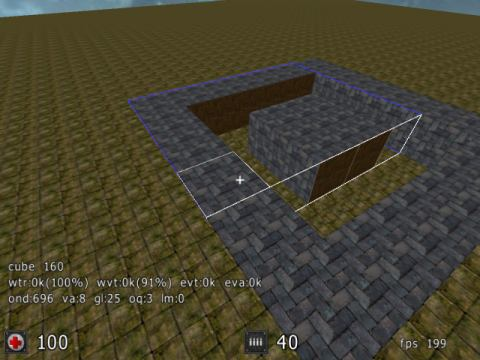

Editing Methods
Conventions
If we write
'X' - key X is what you should press.
Abbreviations :
MW - MouseWheel
Any and all dimensions :
Width x Depth x Height ...are, of course, always relative to your current viewport, unless explicitly noted otherwise!
Introduction
basics
To get started with Sauerbraten editing, you will first need to be aquainted with the key mappings.
The easiest thing to do here, is simply print out the file found in
\Sauerbraten\data\defaults.cfg.
Aside from any autoexec.cfg edits you use, this file contains everything you'll need to get editing fast.
These pages will assume you are running a default keymapping if telling you about a key binding.
Take a look at the
scripting section if you want to adapt your bindings.
Using a wheel-mouse is highly recommended and the default bindings assume one is used!
Some basic introduction into sauerbraten editing mode is given here
Sauer Editing (by staffy on quadropolis).
A good primer to every budding mapper is
Some general mapping tips (by makkE on quadropolis).
geometry
- mousewheel bindings
- MW + Y : select texture for face
- MW + F : push current face into cube
- MW + Q : push current corner into cube
- MW + R : rotate cube (along current faces normal)
- single keypress bindings :
- C, V : copy / paste (use +/- X gridsize for scaling)
- X : mirror cube (along current faces plane)
- BACKSPACE : delete entity
entities
create entities via menu or by manually calling
newent NAME [arg1 [arg2 [arg3 [arg4]]]]
drag entities by their sparkly along plane closest to current FOV.
modify a certain property of your selected (or closest) ent via
MW + 4 and select the appropriate property (0..3) via
MW + 3 (2006-07-22 requires this patch
interesting entities:
jumppad : these take Z force in param 0 (=up), X and Y in params 1 and 2 ... direction is always absolute on a map.
that means you can have two jumppads opposite each other and with properties
10 10 0 and
10 -10 0,
the first'd push up and forward yet the second up and back.
Once you figure out which way is "north" on your map future jumppad values are easy to work out.
So a jumppad with
10 30 -30 will push you in a 45° angle North-West,
23 50 10 would be a high jump to a far-ahead (little off to the right) point.
Before you map
Well - this section isn't filled yet, need to find "careful wording" for it;
but it's preferred to start with at least some outlook on what your mapping towards!
Walk Through 101
You should definitely be aware of the
conventions used here.
Depending on your depth of involvement with this project you might want to skip ahead ...
First Edit Run
run sauerbraten
open console (either press 'BACKQUOTE' or first 'T' and then '/')
gamma 150
then
edittoggle (or press 'E')
now enter
newmap
FYI : the resulting "map" is a half-filled octree.
From here on you will start to build your own map layout.
Turn your camera view downwards
scale up grid by 2 :
G+MW
delete a cube downwards by simply scrolling away from you
and delete another one next to that
fly into the hole and
edittoggle (or 'E')
run around - get a feel for the size
edittoggle (or 'E')
fly out of the hole
lengthen the corridor by 2 cubes,
Your corridor should have dimensions of 1x4x1,
with orientation depending on your position and selection of first cube, etc.
turn it into a square of corridors
a top-down view of your square,
with x as deleted cubes
xxxx
x x
x x
xxxx
select this top-down square of cubes into a 6x6 selection of the top
adapt the texture :
Y+MW - brick
select from outermost back face of corridor ...
...to off-center side of square : 1x5x4
Y+MW - brick
and repeat for all 4 wall orientations.

fly into square
scale down grid by 2 :
G+MW
HxWxD:3x2x5 cubes from center of any inner wall
turn corner (left or right)
repeat 3x2x5 inwards
savemap wt101
map wt101
orientation will be same as when changing the map,
but spawn will replace you at the coordinates (0,0,0)
where exactly this is in relation to the square of corridors
...let's call it : an atrium
depends very much on your personal execution of this walk-through!
You can select a specific starting point by placing your first entity.
What every map should have at least on of.
A
playerstart
newent playerstart
(or use editing menu)
orientation taken from your LOS as the editing camera position at creation time
[LOS:line-of-sight]
entproperty N D
with N the property index (0..3) and D the delta (..-2,-1,0,+1,+2..)
savecurrentmap
map wt101
map wt101
map wt101
... and now be warned :
- mapping can burn a lot of your time.
- keep backups
- and adhere to playability standards
when you've done tinkering around and getting to grips with your tools; tried to build some stuff - just to really get a feel for resulting scale, after endless hours refining just one corner of your layout - you might want to read something like this
article on mapping, to
get the most out of your work into something being a great map. Also don't hesitate to really closely examine how architectural stuff and visual impressions are done by others. Use 'E' on any part of a map you like to find out "
how they did it". Just don't save over the originals!
You will most surely want to use a lot of
gamespeed 10 up to
gamesspeed 1000 to sharpen or slur your movement precision - depending on wether you need to zoom across your RPG map toward some distant location or are fine tuning minmal gridsize stuff.
The last thing a new mapper should be thinking about is releasing the early map(s). Share the maps with a few other people, just for ideas, and encouragement along the way. If you are unsure about what is actually a nice looking/playing map, just load up any map from the first maps menu in Sauerbraten. This should give you some guidelines as to what is expected out of a map.
Editing Features Explained
You should really have some features at your fingertips - this will call for some personalized key-bindings sooner or later.
Since your view's angles have influence on the way you select e.g. faces of cubes you should think about being able to finetune your movement sensitivity by quickly switching from one gamespeed to another.
The simplest form would be have two key-bindings to toggle between "default" and a high as well as a low setting
[gamespeed 500; onrelease [gamespeed 100]]
[gamespeed 30; onrelease [gamespeed 100]]
Finer grained modifiers can be used if this is your style - either get some basic scripting from the interwebs or write it yourself,
this is too personal for there to be big packs, the meATpAk might be an exception - but it does everything it's own way, so : you've been warned!
Another important control to have at the ready:
history
You should certainly have a key bound to the
history command, then placing X lights of same setup is just movement and pressing
that key. :)
Of course this requires you to set the first light via a console command - not via the menu, since this doesn't get added to your console history.
While we're on the topic of the console you should look at the way
basic on-the-fly scripting can help you speed up your editing!
Expert Editing Methods
Well ... if you're far enough to need some tips ... we haven't yet found any to put here.
Tell us about them on IRC! :)